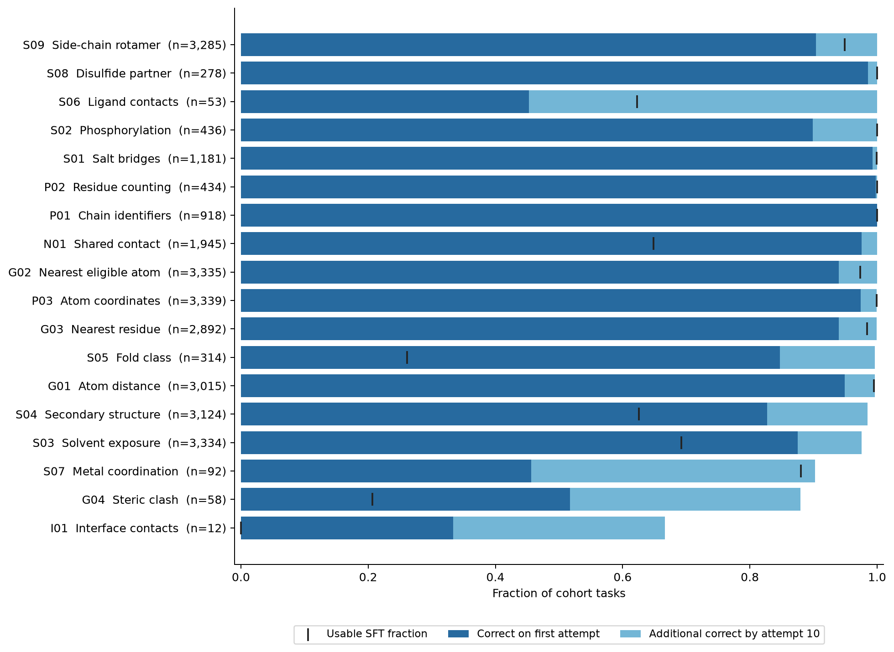
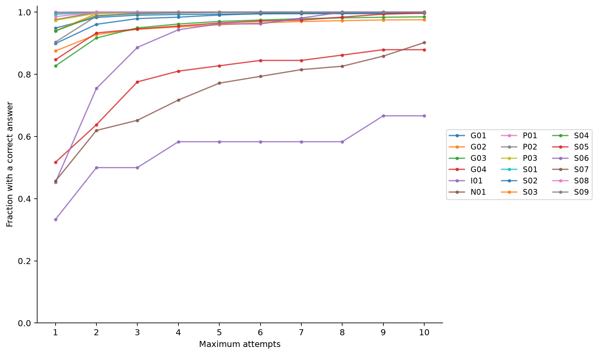
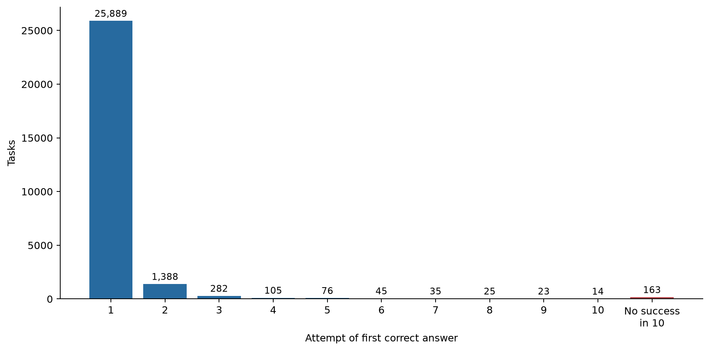
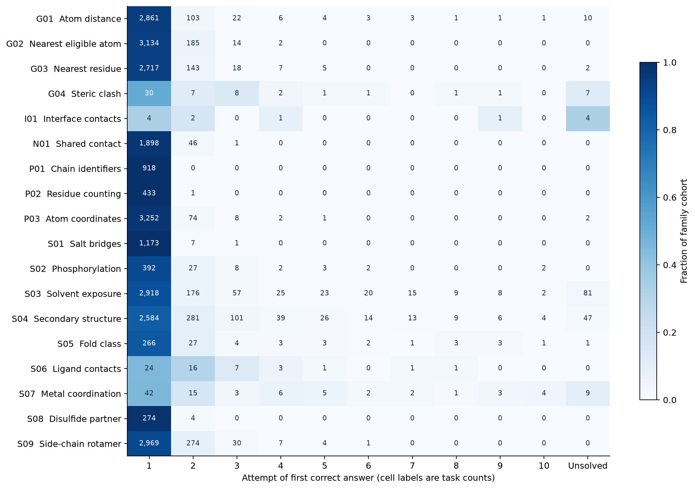

Complete. GLM-5.3 produced 33,003 scored attempts for a cohort of 28,045 coordinate-interpretation training tasks. It answered 25,889 correctly on the first attempt and 27,882 correctly within ten attempts. 24,522 complete correct teacher traces fit Snowball's 32,768-token training context.
The cohort is exactly the training split of PDBThink Coordinate Tasks v1.2.0 whose prompts leave at least 8,192 Snowball tokens. It covers 18 families and 438 source groups. T01 has no eligible examples; I01 has only 12. Tasks sharing a structure are correlated; these are task-level descriptive counts.
Each attempt presents the unchanged system and user prompts, without tools, gold answers, verifier feedback, or previous attempts. Sampling uses temperature 1.0, top-p 0.95 and high reasoning effort. Stable task/attempt seeds are recorded in the generation code. Each task stops at the first correct answer or ten scored attempts. Infrastructure failures are retained separately and do not consume a scored attempt.
The teacher receives its full remaining served 262,144-token context for reasoning and output. The 8K reserve selects inputs; it is not an imposed teacher output cap. Scores come from the exact verifier code and gold contract bundled in each released Harbor task. Only the final answer is scored, with the task's existing numerical tolerances and exact-set rules. Correct answers do not certify every step of the teacher's reasoning. No generated tool calls are executed.
Every retained response includes raw returned reasoning and final text. SFT uses an assistant message containing the reasoning, a blank line, and the final answer, rendered with Snowball's pinned thinking-enabled template. Exact full-sequence counts include chat delimiters and the assistant end token. No trace is truncated. 3,360 correct traces exceed Snowball's context; they remain in the attempt archive. 22,094 SFT traces have an assistant completion of at most 8,192 tokens. Only training-split tasks were sent to the teacher; the original validation and test splits remain untouched.
22,862 SFT traces contain separately emitted reasoning. Responses without separate reasoning retain their entire answer message; no reasoning is invented for them. The has_reasoning column supports filtering.
There were 19 infrastructure failures, 350 responses that exhausted the teacher's native context, and 0 tool violations. Scored attempts consumed 387,005,136 reported completion tokens. The served model reports GLM-5.3 with FP8 weights; no immutable deployed weight revision is exposed. Tokenizer revisions and verifier hashes are pinned in manifest.json.
The curves show observed cumulative success under stop-on-success sampling. We do not apply the standard fixed-sample pass@k estimator, because successful tasks were not sampled ten times. Failure after ten attempts does not establish impossibility. Rejection-sampled SFT data favours easier tasks and shorter successful traces; family counts should guide later training mixtures. In small categorical answer spaces, retries can also find the correct label by chance. Compare first-attempt accuracy alongside cumulative success.
The frozen verifier rejected 11 numeric responses across 2 tasks at a floating-point tolerance boundary, although exact decimal comparison would accept them. 1 of these tasks exhausted ten attempts without a native-verifier success. The primary results, retry counts and SFT selection retain the original verifier's decisions; affected attempts and outcomes carry explicit flags. These cases should not be interpreted as evidence that GLM cannot meet the mathematical tolerance. A scorer correction requires a separate versioned task release. Affected responses and native scores.
An independent all-pairs calculation on one exhausted steric-clash task reproduced the native gold from its 536 displayed atoms. GLM's final choice instead matches the largest overlap when cysteine SG–SG pairs are included. The benchmark excludes those pairs, but the prompt does not explicitly state that rule. This is a limitation of the prompt and of interpreting this failure as an arithmetic error. Scores remain those of the frozen verifier; the spot check does not estimate how often this occurs. Calculations and ranking; frozen task input.
A targeted audit of 3 persistent distance failures found repeated coordinate-reading errors: GLM dropped a negative sign, then calculated a distance using the altered coordinate. Independent fixed-width PDB extraction and math.dist reproduced every audited gold answer. These deliberately selected examples illustrate a failure mechanism, rather than estimating its prevalence. Coordinates, calculations and teacher text.
| Family | Tasks | First try | By ten tries | Unsolved after ten | SFT traces |
|---|---|---|---|---|---|
| P01 — Chain identifiers | 918 | 918 (100.0%) | 918 (100.0%) | 0 | 918 |
| P02 — Residue counting | 434 | 433 (99.8%) | 434 (100.0%) | 0 | 434 |
| P03 — Atom coordinates | 3,339 | 3,252 (97.4%) | 3,337 (99.9%) | 2 | 3,336 |
| G01 — Atom distance | 3,015 | 2,861 (94.9%) | 3,005 (99.7%) | 10 | 2,999 |
| G02 — Nearest eligible atom | 3,335 | 3,134 (94.0%) | 3,335 (100.0%) | 0 | 3,247 |
| G03 — Nearest residue | 2,892 | 2,717 (93.9%) | 2,890 (99.9%) | 2 | 2,846 |
| G04 — Steric clash | 58 | 30 (51.7%) | 51 (87.9%) | 7 | 12 |
| S01 — Salt bridges | 1,181 | 1,173 (99.3%) | 1,181 (100.0%) | 0 | 1,180 |
| S02 — Phosphorylation | 436 | 392 (89.9%) | 436 (100.0%) | 0 | 436 |
| S03 — Solvent exposure | 3,334 | 2,918 (87.5%) | 3,253 (97.6%) | 81 | 2,307 |
| S04 — Secondary structure | 3,124 | 2,584 (82.7%) | 3,077 (98.5%) | 47 | 1,954 |
| S05 — Fold class | 314 | 266 (84.7%) | 313 (99.7%) | 1 | 82 |
| S06 — Ligand contacts | 53 | 24 (45.3%) | 53 (100.0%) | 0 | 33 |
| S07 — Metal coordination | 92 | 42 (45.7%) | 83 (90.2%) | 9 | 81 |
| S08 — Disulfide partner | 278 | 274 (98.6%) | 278 (100.0%) | 0 | 278 |
| S09 — Side-chain rotamer | 3,285 | 2,969 (90.4%) | 3,285 (100.0%) | 0 | 3,117 |
| I01 — Interface contacts | 12 | 4 (33.3%) | 8 (66.7%) | 4 | 0 |
| N01 — Shared contact | 1,945 | 1,898 (97.6%) | 1,945 (100.0%) | 0 | 1,262 |
| T01 — Two-state contacts | 0 | Excluded by context filter | |||




Source dataset revision: fbd07fe7255f1f65d4d860c7561d5ae03110d1e9. Machine-readable results: summary.json; task outcomes and all attempts are supplied as Parquet.
Pinned public code. Package versions and source hashes; release audit.
Published traces: open-athena/pdbthink-glm53-teacher-traces at revision 91baf80abe4cd10e3258bbcc0addafd4d3d32b22.